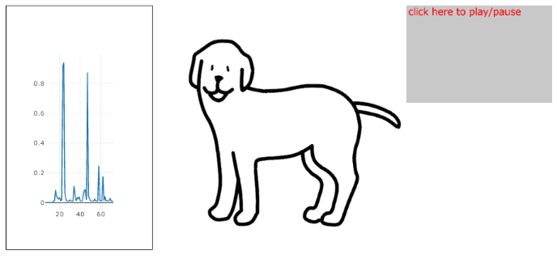

かならずお読みください→
サウンドスイッチ
こえをかけるとへんじするしろいいぬ
前回はスワイプ動作で動かせるしろいいぬのおもちゃを紹介しました。みなさんいかがだったでしょうか？
アニメーションもいろいろ作ってみましたが、これも慣れてくると少しづつコツもつかめて来るようです。
このおもちゃの目玉は何と言ってもスワイプでした。ボタン操作に比べてあまり正確でもなく不安定な動作です。リンゴマークの会社は理解しやすいとか、直感でわかりやすい操作と宣伝していましたのを思い出します。このようなおもちゃで遊んでいると、もしかしたら将来の何かにつながるのかもしれません。
今回は手作りしましたので、スワイプの角度や長さも計算できます。このような工夫をすれば限られた動作から、より多くの情報を引き出すこともできることがわかりました。
例えおもちゃでもこのように自分で作ってみると、いろいろとわかりできるようになります。
さて、このおもちゃをあれこれとうごかして遊んでいると考えが広がってきます。
このおもちゃのスワイプは、タッチパネルの接触位置座標値をプログラムで計測して読み取り、動きを計算し、方向を判断して、アニメーションを動かしています。この計測、計算、判断の部分に手を加えれば別のやり方もできるのではないかと考え始めました。
さて多くの人に使いやすいと思われているタブレットやスマホですが、指先にしびれや麻痺のあるとタッチパネルが苦手という人もいます。また身体に不自由があるとその人の姿勢とタブレットの取り付け位置で苦労することもあります。またその人の見やすい場所にタブレットを置くとそこに手が届きにくいなどということさえあります。
タブレットは基本的に一般向け製品ですので、このような限界があることはしかたありません。しかし一昔前のハイテクがネットオークションで安価に入手できて使う人に合わせていろいろ工夫できるのも、同じく一般向け製品だからなのです。
さて話をもとにもどします。このように身体に不自由があって機器操作がうまくいかなくても、誰かを呼ぶのに声や舌打ち音を出せる場合が少なくありません。そこで音を使って何かできないかというのが今回のお話です。
起動するとこのページのトップ画像のように表示されます。画面右のグレーの枠をクリックすると始まります。マイクに向かって声をかけると左のグラフが動き、しろいいぬがへんじします。（へんじはもちろんいぬのことばです わん）
タブレットや多くのノートパソコンにはマイクがついています。しかしマイクがオフでは何も起きません。マイクをオンにして音量を調整してください。
スピーカーの音量が大きすぎるといぬの声がマイクに入り、なきごえが止まらなくなります。また小さすぎるとなにもきこえません。適切に調整してください。
また、パソコンやタブレットに話しかけているあなたの姿はかなり怪しいです。周囲の視線にご注意ください。
この取り組みは、マイクの音量を計測するところから始まります。早速検索すると数は少ないのですがすでにやっている人たちが見つかりました。
この人たちは、AV（Audio and Visual)方面の芸術系？ライブラリのp5.jsのユーザで、そのなかのp5.sound.jsにマイク音量を計測する機能があることがわかりました。
また参考URLに紹介した。永井 勝則さんのサイト には、p5.sound.jsに関する詳細な解説記事もあります。 こちらを参考にするというよりも、永井さんの公開サンプルにこちらのしろいいぬを飛び入りさせたのが今回のサンプルです。
今を去ること三十年前、パシフィックサプライのPPSスイッチに触発され、患者さんの声でON・OFFするスイッチを計画したことがあります。マイク、アンプ、回路、バッテリ、ケースと作業を進めましたが、結局高価になりすぎたため断念しました。いくら役に立って便利でも、持続できないようでは意味がありません。破産しても困ります。
ところが今回、ほとんど出費なし。ごく短期間に声で動くおもちゃができてしまいました。
暗いニュースも多いですが、
「今はいい時代だな。」
とつくづく思いました。
次回は、サウンドスイッチつくり方と用途についてお話ししたいと思います。
2022/06/10 公開
研究企画課リハ工学科にもどる
←もくじはこちらです